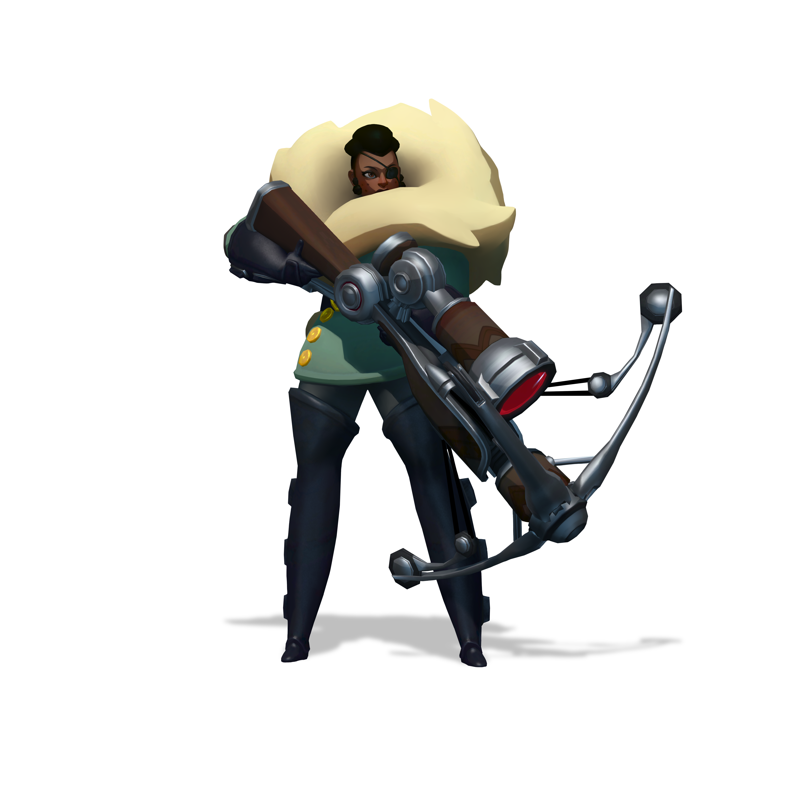

Scroll down to find out more about Imani!

A brief summary on Imani:
- Imani is easily one of the most powerful heroes in Gigantic, but she requires a player who knows how to best utilize her to unlock her true power.
- Imani is a highly resourceful sniper, and her two main abilities are "Autobolts" and "Silent Scope".
- While on paper she is untouchable in terms of damage, if you are not able to predict your opponents movements, you will die really quickly.
- "Autobolts" is a burst of medium ranged shots that are dealt from Imani's crossbow type gun.
- She can switch on and off to "Silent Scope", her sniper gun, that has a 100% critical chance, and can do more damage the longer you wait.
- She is great for picking off enemies one by one, and shooting crippling shots at enemies.
- Imani also has "Special Ammo", which are three bullets, that you can upgrade to either burn, or freeze your ememy.
- Either way you upgrade "Special Ammo", it is essential when you want to get kills, and can increase the damage done per shot.
- Her last ability is the "Smoke Bomb" which can either be used as a jump pad/cover, or a projectile that stealths you and allies, as well as weakens or damages enemies, depending on how you upgrade her.
- "Smoke Bomb" is essential in getting out of close quarter fighting, a suprise enemy sneak attack, or to get to your favorite camping spot.
- A long as you keep Imani moving, snipe from different locations, and do your best to control the crowd, she is unbeatable.
- There is also another way that you can use Imani, that only one, or a few people use.
- Its a very special and peculiar way of using her "Silent Scope" and "Autobolts", but I don't think I can do justice on explaining it properly, because I only saw the play style once or twice.
- It's kind of like finding the enemy with "Silent Scope" and quickly swithcing back to "Autobolts" for the shot, and then switching back.
- Her "Silent Scope" skill increases damage the more time you stayed zoomed in, which leads to some pretty dramatic damage if used properly and with someone who has good aim.
- Imani is like the only sniper character in Gigantic, and like all of them, she is extremely unique and irreplacable.
- “We think their sniper, Imani, is hidden on that ridge, sir.”
“Then why are you cowering behind these rocks? She couldn't hit a barn at that dist—”
— last words of Commander Sedgwick, House Tesserus
Links
We'll see you on the airship!!